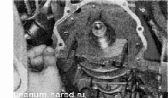

Масляный насос снятие, проверка и установкаСнятие 1. Снимаем зубчатый шкив коленчатого вала и его шпонку. 2. Снимаем датчик положения коленчатого вала. 3. Снимаем маслозаборник. 4. Торцовым ключом на 10 мм отворачиваем шесть болтов крепления масляного насоса к блоку цилиндров. 5. Снимаем масляный насос с двигателя. 6. Удаляем остатки уплотнительной прокладки с привалочной плоскости блока цилиндров. Разборка 1. Шестигранным ключом на 5 мм отворачиваем шесть болтов, стягивающих корпус насоса и крышку. 3. Вынимаем из крышки ведущую шестерню. 4. Извлекаем из корпуса ведомую шестерню. Рекомендация Пробка редукционного (предохранительного) клапана затянута большим моментом. При ее отворачивании можно случайно повредить крышку насоса. Также на самой пробке повреждаются грани под ключ. Поэтому без необходимости не разбирайте клапан. Промыть клапан можно без его разборки. 5. Промываем детали насоса дизельным топливом или керосином, вытираем насухо и смазываем шестерни чистым моторным маслом. Проверка 1. Осматриваем детали масляного насоса. На них не должно быть следов сильного износа, навалакивания металла, трещин и других повреждений. 2. Штангенциркулем измеряем диаметр посадочного отверстия ведомой шестерни в корпус насоса и толщину перегородки между ведомой и ведущей шестернями. Замечание Диаметр посадочного места ведомой шестерни в корпусе насоса не должен превышать 75,1 мм. Минимальная толщина разделительной перегородки между ведущей и ведомой шестернями - 3,4 мм. 3. Микрометром измеряем толщину ведомой и ведущей шестерен. Если ведомая шестерня тоньше 7,35 мм, а ведущая — 7,41 мм, то заменяем шестерни. 4. Укладываем ведущую шестерню в корпус масляного насоса. Приложив ребро слесарной линейки к привалочной поверхности корпуса масляного насоса, набором плоских щупов определяем зазор между ребром линейки и шестерней. Повторяем проверку с ведомой шестерней. Если зазор между линейкой и ведущей шестерней более 0,12 мм (или 0,15 мм - для ведомой), необходимо заменить шестерни. Сборка На снятом насосе рекомендуется заменить передний сальник коленчатого вала, установленный в крышке насоса Собираем насос в последовательности, обратной снятию. При этом ведомая шестерня должна быть установлена в насос так, чтобы сторона с меткой и фасками на зубьях была обращена к корпусу. Ведущая шестерня должна быть сориентирована при установке аналогичным образом: фасками на зубьях — к корпусу насоса. Установка Устанавливаем масляный насос в последовательности, обратной снятию, заменив прокладку между насосом и блоком цилиндров на новую. |